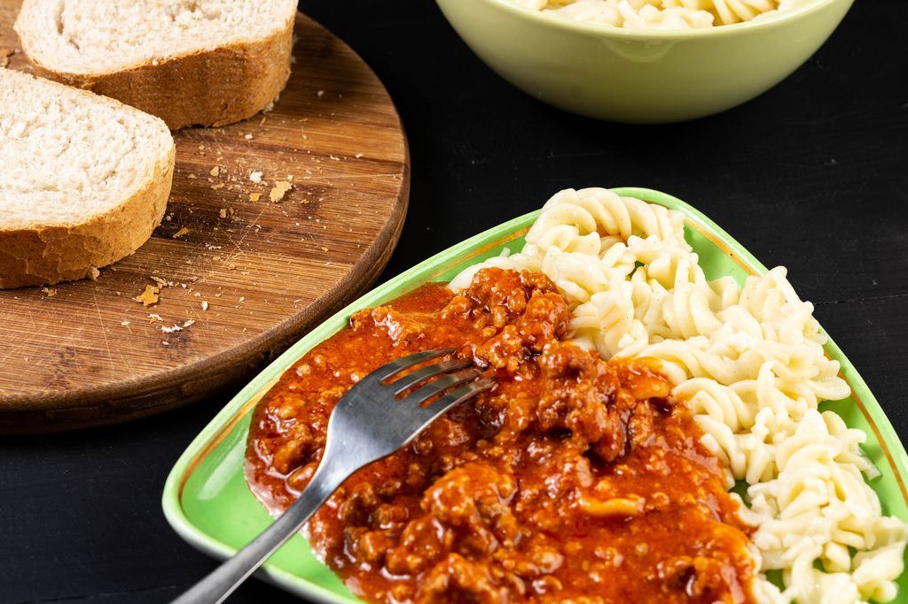

Bolognese
Home

Description
A simple and delicious bolognese meal, with pasta, ground beef and tomato paste.
Ingredients
- 2 tablespoons olive oil
- 1 cup finely chopped carrots
- 1 onion, finely chopped
- 2 cloves garlic, minced
- 1 pound lean ground beef
- 1 ½ cups whole milk, divided
- 1 (28-ounce) can crushed tomatoes
- 1 (6-ounce) can tomato paste
- 1 teaspoon dried basil
- 1 teaspoon dried oregano
- ½ teaspoon salt
- ½ teaspoon ground black pepper
- ¼ teaspoon crushed red pepper flakes
- ¼ cup grated Parmesan cheese-->
Instructions
- Step 1
Heat olive oil in a large skillet over medium heat. Add carrots, onion, and garlic; cook and stir until tender, about 10 minutes. Add ground beef; cook, stirring and breaking up meat, until browned, 5 to 7 minutes. Drain off excess fat from the skillet.
- Step 2
Stir in 1 cup milk; bring to a simmer. Reduce heat to medium-low and cook until milk is absorbed, about 15 minutes.
- Step 3
Transfer beef mixture to a slow cooker and set to High. Stir in crushed tomatoes, tomato paste, basil, oregano, salt, pepper, and red pepper flakes. Cover and cook on High for 2 hours. Stir in remaining ½ cup milk and Parmesan; cook for 2 more hours.